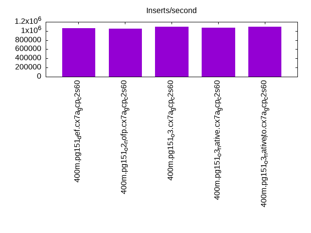
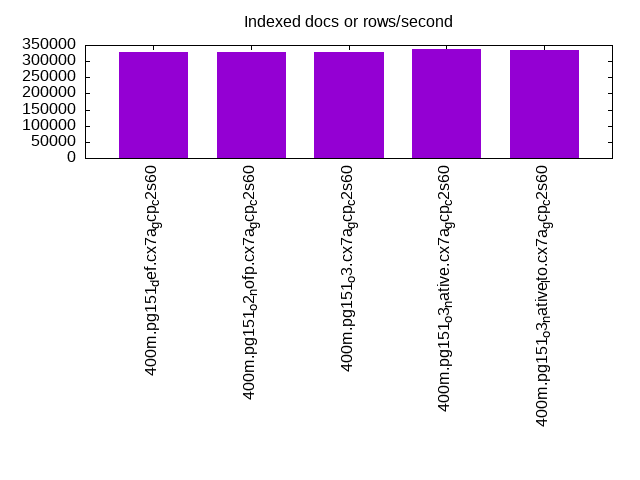
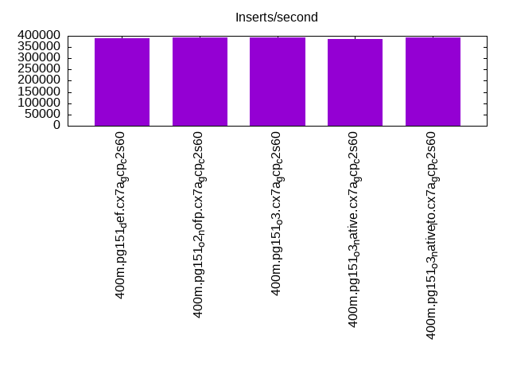
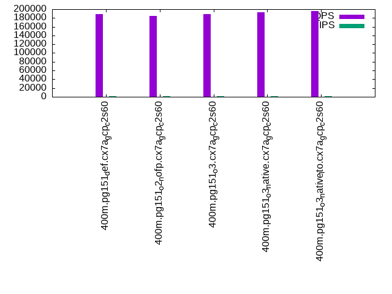
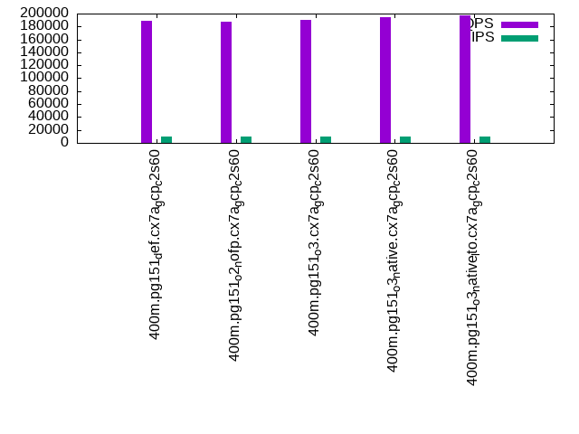
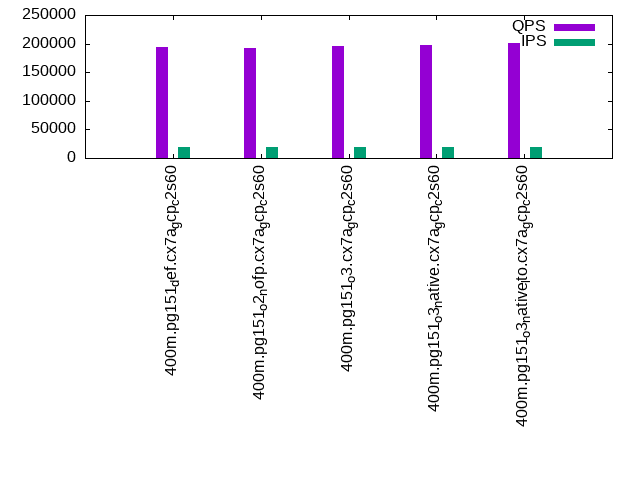

This is a report for the insert benchmark with 400M docs and 20 client(s). It is generated by scripts (bash, awk, sed) and Tufte might not be impressed. An overview of the insert benchmark is here and a short update is here. Below, by DBMS, I mean DBMS+version.config. An example is my8020.c10b40 where my means MySQL, 8020 is version 8.0.20 and c10b40 is the name for the configuration file.
The test server is c2-standard-60 from GCP with 30 cores, hyperthreads disabled, 240G RAM and 3T of NVMe (XFS with RAID0 over 8 devices). The benchmark was run with 20 clients and there were 1 or 2 connections per client (1 for queries, 1 for inserts). It uses 1 table. It loads 400M rows without secondary indexes, creates secondary indexes, loads another 400M rows per table then does 3 read+write tests for one hour each that do queries as fast as possible with 100, 500 and then 1000 writes/second/client concurrent with the queries. The database is cached by the storage engine and the only IO is for writes. Clients and the DBMS share one server. The per-database configs are in the per-database subdirectories here.
The tested DBMS are:
The numbers are inserts/s for l.i0 and l.i1, indexed docs (or rows) /s for l.x and queries/s for q*.2. The values are the average rate over the entire test for inserts (IPS) and queries (QPS). The range of values for IPS and QPS is split into 3 parts: bottom 25%, middle 50%, top 25%. Values in the bottom 25% have a red background, values in the top 25% have a green background and values in the middle have no color. A gray background is used for values that can be ignored because the DBMS did not sustain the target insert rate. Red backgrounds are not used when the minimum value is within 80% of the max value.
| dbms | l.i0 | l.x | l.i1 | q100.1 | q500.1 | q1000.1 |
|---|---|---|---|---|---|---|
| 400m.pg151_def.cx7a_gcp_c2s60 | 1058201 | 327414 | 387973 | 188814 | 188582 | 194475 |
| 400m.pg151_o2_nofp.cx7a_gcp_c2s60 | 1052632 | 326879 | 394477 | 184700 | 187236 | 191566 |
| 400m.pg151_o3.cx7a_gcp_c2s60 | 1092896 | 329300 | 393314 | 188759 | 190465 | 194991 |
| 400m.pg151_o3_native.cx7a_gcp_c2s60 | 1069519 | 337352 | 385356 | 193190 | 194181 | 196975 |
| 400m.pg151_o3_native_lto.cx7a_gcp_c2s60 | 1092896 | 333695 | 394477 | 195775 | 196554 | 201918 |
This table has relative throughput, throughput for the DBMS relative to the DBMS in the first line, using the absolute throughput from the previous table.
| dbms | l.i0 | l.x | l.i1 | q100.1 | q500.1 | q1000.1 |
|---|---|---|---|---|---|---|
| 400m.pg151_def.cx7a_gcp_c2s60 | 1.00 | 1.00 | 1.00 | 1.00 | 1.00 | 1.00 |
| 400m.pg151_o2_nofp.cx7a_gcp_c2s60 | 0.99 | 1.00 | 1.02 | 0.98 | 0.99 | 0.99 |
| 400m.pg151_o3.cx7a_gcp_c2s60 | 1.03 | 1.01 | 1.01 | 1.00 | 1.01 | 1.00 |
| 400m.pg151_o3_native.cx7a_gcp_c2s60 | 1.01 | 1.03 | 0.99 | 1.02 | 1.03 | 1.01 |
| 400m.pg151_o3_native_lto.cx7a_gcp_c2s60 | 1.03 | 1.02 | 1.02 | 1.04 | 1.04 | 1.04 |
This lists the average rate of inserts/s for the tests that do inserts concurrent with queries. For such tests the query rate is listed in the table above. The read+write tests are setup so that the insert rate should match the target rate every second. Cells that are not at least 95% of the target have a red background to indicate a failure to satisfy the target.
| dbms | q100.1 | q500.1 | q1000.1 |
|---|---|---|---|
| pg151_def.cx7a_gcp_c2s60 | 1976 | 9885 | 19769 |
| pg151_o2_nofp.cx7a_gcp_c2s60 | 1976 | 9885 | 19769 |
| pg151_o3.cx7a_gcp_c2s60 | 1976 | 9885 | 19769 |
| pg151_o3_native.cx7a_gcp_c2s60 | 1977 | 9885 | 19769 |
| pg151_o3_native_lto.cx7a_gcp_c2s60 | 1976 | 9890 | 19769 |
| target | 2000 | 10000 | 20000 |
l.i0: load without secondary indexes. Graphs for performance per 1-second interval are here.
Average throughput:
Insert response time histogram: each cell has the percentage of responses that take <= the time in the header and max is the max response time in seconds. For the max column values in the top 25% of the range have a red background and in the bottom 25% of the range have a green background. The red background is not used when the min value is within 80% of the max value.
| dbms | 256us | 1ms | 4ms | 16ms | 64ms | 256ms | 1s | 4s | 16s | gt | max |
|---|---|---|---|---|---|---|---|---|---|---|---|
| pg151_def.cx7a_gcp_c2s60 | 17.359 | 79.116 | 3.468 | 0.020 | 0.027 | 0.010 | 0.991 | ||||
| pg151_o2_nofp.cx7a_gcp_c2s60 | 15.731 | 80.523 | 3.661 | 0.046 | 0.030 | 0.009 | 0.615 | ||||
| pg151_o3.cx7a_gcp_c2s60 | 20.346 | 76.465 | 3.134 | 0.013 | 0.033 | 0.010 | 0.741 | ||||
| pg151_o3_native.cx7a_gcp_c2s60 | 19.622 | 76.740 | 3.584 | 0.017 | 0.026 | 0.011 | 0.750 | ||||
| pg151_o3_native_lto.cx7a_gcp_c2s60 | 24.912 | 71.498 | 3.535 | 0.016 | 0.029 | 0.011 | 0.610 |
Performance metrics for the DBMS listed above. Some are normalized by throughput, others are not. Legend for results is here.
ips qps rps rmbps wps wmbps rpq rkbpq wpi wkbpi csps cpups cspq cpupq dbgb1 dbgb2 rss maxop p50 p99 tag 1058201 0 0 0.0 1644.7 421.3 0.000 0.000 0.002 0.408 325574 57.5 0.308 16 43.0 117.3 NA 0.991 58735 18387 400m.pg151_def.cx7a_gcp_c2s60 1052632 0 0 0.0 1712.6 440.5 0.000 0.000 0.002 0.428 291249 57.5 0.277 16 43.0 122.2 0.0 0.615 59033 16090 400m.pg151_o2_nofp.cx7a_gcp_c2s60 1092896 0 0 0.0 1662.3 422.9 0.000 0.000 0.002 0.396 294405 58.0 0.269 16 43.0 115.2 NA 0.741 60333 15183 400m.pg151_o3.cx7a_gcp_c2s60 1069519 0 0 0.0 1626.3 421.3 0.000 0.000 0.002 0.403 328228 57.0 0.307 16 43.0 116.8 NA 0.750 59035 15389 400m.pg151_o3_native.cx7a_gcp_c2s60 1092896 0 0 0.0 1633.2 419.1 0.000 0.000 0.001 0.393 345431 57.0 0.316 16 43.0 115.1 NA 0.610 60333 19078 400m.pg151_o3_native_lto.cx7a_gcp_c2s60
l.x: create secondary indexes.
Average throughput:
Performance metrics for the DBMS listed above. Some are normalized by throughput, others are not. Legend for results is here.
ips qps rps rmbps wps wmbps rpq rkbpq wpi wkbpi csps cpups cspq cpupq dbgb1 dbgb2 rss maxop p50 p99 tag 327414 0 0 0.0 414.9 97.0 0.000 0.000 0.001 0.303 1163 3.0 0.004 3 78.3 152.6 0.0 0.002 NA NA 400m.pg151_def.cx7a_gcp_c2s60 326879 0 0 0.0 406.1 95.1 0.000 0.000 0.001 0.298 1197 3.0 0.004 3 78.3 157.5 0.0 0.002 NA NA 400m.pg151_o2_nofp.cx7a_gcp_c2s60 329300 0 0 0.0 438.0 109.5 0.000 0.000 0.001 0.340 1550 3.1 0.005 3 78.3 152.3 0.0 0.014 NA NA 400m.pg151_o3.cx7a_gcp_c2s60 337352 0 0 0.0 417.8 99.2 0.000 0.000 0.001 0.301 1185 3.0 0.004 3 78.3 152.7 0.0 0.025 NA NA 400m.pg151_o3_native.cx7a_gcp_c2s60 333695 0 0 0.0 437.2 108.2 0.000 0.000 0.001 0.332 1078 3.0 0.003 3 78.3 152.4 0.0 0.019 NA NA 400m.pg151_o3_native_lto.cx7a_gcp_c2s60
l.i1: continue load after secondary indexes created. Graphs for performance per 1-second interval are here.
Average throughput:
Insert response time histogram: each cell has the percentage of responses that take <= the time in the header and max is the max response time in seconds. For the max column values in the top 25% of the range have a red background and in the bottom 25% of the range have a green background. The red background is not used when the min value is within 80% of the max value.
| dbms | 256us | 1ms | 4ms | 16ms | 64ms | 256ms | 1s | 4s | 16s | gt | max |
|---|---|---|---|---|---|---|---|---|---|---|---|
| pg151_def.cx7a_gcp_c2s60 | 94.531 | 4.663 | 0.759 | 0.035 | 0.011 | nonzero | 1.859 | ||||
| pg151_o2_nofp.cx7a_gcp_c2s60 | 94.679 | 4.629 | 0.649 | 0.028 | 0.014 | 0.001 | 1.581 | ||||
| pg151_o3.cx7a_gcp_c2s60 | 94.588 | 4.572 | 0.792 | 0.031 | 0.016 | nonzero | 1.540 | ||||
| pg151_o3_native.cx7a_gcp_c2s60 | 94.423 | 4.725 | 0.807 | 0.030 | 0.016 | 0.968 | |||||
| pg151_o3_native_lto.cx7a_gcp_c2s60 | 94.534 | 4.614 | 0.808 | 0.030 | 0.014 | 0.911 |
Performance metrics for the DBMS listed above. Some are normalized by throughput, others are not. Legend for results is here.
ips qps rps rmbps wps wmbps rpq rkbpq wpi wkbpi csps cpups cspq cpupq dbgb1 dbgb2 rss maxop p50 p99 tag 387973 0 1902 13.8 2482.5 455.1 0.005 0.036 0.006 1.201 295237 54.0 0.761 42 170.2 333.6 0.0 1.859 23175 1949 400m.pg151_def.cx7a_gcp_c2s60 394477 0 1759 12.9 2428.6 447.9 0.004 0.033 0.006 1.163 253781 55.4 0.643 42 170.2 327.0 NA 1.581 23482 2548 400m.pg151_o2_nofp.cx7a_gcp_c2s60 393314 0 2028 14.6 2412.0 455.2 0.005 0.038 0.006 1.185 264858 53.9 0.673 41 170.2 329.1 NA 1.540 23824 1998 400m.pg151_o3.cx7a_gcp_c2s60 385356 0 1665 12.0 2365.5 432.4 0.004 0.032 0.006 1.149 299730 53.2 0.778 41 170.2 326.8 NA 0.968 23275 1898 400m.pg151_o3_native.cx7a_gcp_c2s60 394477 0 1979 14.8 2424.2 444.5 0.005 0.039 0.006 1.154 301611 52.8 0.765 40 170.2 326.0 NA 0.911 24024 2048 400m.pg151_o3_native_lto.cx7a_gcp_c2s60
q100.1: range queries with 100 insert/s per client. Graphs for performance per 1-second interval are here.
Average throughput:
Query response time histogram: each cell has the percentage of responses that take <= the time in the header and max is the max response time in seconds. For max values in the top 25% of the range have a red background and in the bottom 25% of the range have a green background. The red background is not used when the min value is within 80% of the max value.
| dbms | 256us | 1ms | 4ms | 16ms | 64ms | 256ms | 1s | 4s | 16s | gt | max |
|---|---|---|---|---|---|---|---|---|---|---|---|
| pg151_def.cx7a_gcp_c2s60 | 99.967 | 0.026 | 0.006 | 0.001 | nonzero | 0.026 | |||||
| pg151_o2_nofp.cx7a_gcp_c2s60 | 99.964 | 0.029 | 0.006 | 0.001 | nonzero | 0.025 | |||||
| pg151_o3.cx7a_gcp_c2s60 | 99.969 | 0.024 | 0.006 | 0.001 | nonzero | 0.024 | |||||
| pg151_o3_native.cx7a_gcp_c2s60 | 99.971 | 0.022 | 0.006 | 0.001 | nonzero | 0.026 | |||||
| pg151_o3_native_lto.cx7a_gcp_c2s60 | 99.974 | 0.019 | 0.006 | 0.001 | nonzero | 0.024 |
Insert response time histogram: each cell has the percentage of responses that take <= the time in the header and max is the max response time in seconds. For max values in the top 25% of the range have a red background and in the bottom 25% of the range have a green background. The red background is not used when the min value is within 80% of the max value.
| dbms | 256us | 1ms | 4ms | 16ms | 64ms | 256ms | 1s | 4s | 16s | gt | max |
|---|---|---|---|---|---|---|---|---|---|---|---|
| pg151_def.cx7a_gcp_c2s60 | 98.394 | 1.307 | 0.268 | 0.029 | 0.001 | 0.282 | |||||
| pg151_o2_nofp.cx7a_gcp_c2s60 | 97.382 | 2.221 | 0.397 | 0.039 | |||||||
| pg151_o3.cx7a_gcp_c2s60 | 98.547 | 1.261 | 0.192 | 0.035 | |||||||
| pg151_o3_native.cx7a_gcp_c2s60 | 97.988 | 1.699 | 0.307 | 0.007 | 0.069 | ||||||
| pg151_o3_native_lto.cx7a_gcp_c2s60 | 97.812 | 1.815 | 0.372 | 0.056 |
Performance metrics for the DBMS listed above. Some are normalized by throughput, others are not. Legend for results is here.
ips qps rps rmbps wps wmbps rpq rkbpq wpi wkbpi csps cpups cspq cpupq dbgb1 dbgb2 rss maxop p50 p99 tag 1976 188814 0 0.0 2462.2 68.5 0.000 0.000 1.246 35.522 671024 62.7 3.554 100 171.1 304.9 0.0 0.026 9353 8966 400m.pg151_def.cx7a_gcp_c2s60 1976 184700 1 0.0 2468.1 68.1 0.000 0.000 1.249 35.307 659067 62.8 3.568 102 171.1 304.8 0.0 0.025 9194 8890 400m.pg151_o2_nofp.cx7a_gcp_c2s60 1976 188759 1 0.0 2494.3 64.1 0.000 0.000 1.262 33.247 674281 62.7 3.572 100 171.1 302.4 0.0 0.024 9365 9046 400m.pg151_o3.cx7a_gcp_c2s60 1977 193190 1 0.0 2487.5 63.2 0.000 0.000 1.258 32.739 686573 62.7 3.554 97 171.1 300.0 0.0 0.026 9625 9222 400m.pg151_o3_native.cx7a_gcp_c2s60 1976 195775 1 0.0 2510.3 63.0 0.000 0.000 1.271 32.641 697644 62.9 3.564 96 171.1 310.9 0.0 0.024 9685 9318 400m.pg151_o3_native_lto.cx7a_gcp_c2s60
q500.1: range queries with 500 insert/s per client. Graphs for performance per 1-second interval are here.
Average throughput:
Query response time histogram: each cell has the percentage of responses that take <= the time in the header and max is the max response time in seconds. For max values in the top 25% of the range have a red background and in the bottom 25% of the range have a green background. The red background is not used when the min value is within 80% of the max value.
| dbms | 256us | 1ms | 4ms | 16ms | 64ms | 256ms | 1s | 4s | 16s | gt | max |
|---|---|---|---|---|---|---|---|---|---|---|---|
| pg151_def.cx7a_gcp_c2s60 | 99.906 | 0.064 | 0.027 | 0.003 | nonzero | 0.030 | |||||
| pg151_o2_nofp.cx7a_gcp_c2s60 | 99.901 | 0.068 | 0.027 | 0.003 | nonzero | 0.030 | |||||
| pg151_o3.cx7a_gcp_c2s60 | 99.907 | 0.063 | 0.027 | 0.003 | nonzero | 0.034 | |||||
| pg151_o3_native.cx7a_gcp_c2s60 | 99.912 | 0.059 | 0.026 | 0.003 | nonzero | nonzero | 0.272 | ||||
| pg151_o3_native_lto.cx7a_gcp_c2s60 | 99.914 | 0.057 | 0.026 | 0.003 | nonzero | nonzero | 0.120 |
Insert response time histogram: each cell has the percentage of responses that take <= the time in the header and max is the max response time in seconds. For max values in the top 25% of the range have a red background and in the bottom 25% of the range have a green background. The red background is not used when the min value is within 80% of the max value.
| dbms | 256us | 1ms | 4ms | 16ms | 64ms | 256ms | 1s | 4s | 16s | gt | max |
|---|---|---|---|---|---|---|---|---|---|---|---|
| pg151_def.cx7a_gcp_c2s60 | 52.672 | 27.405 | 19.639 | 0.284 | 0.210 | ||||||
| pg151_o2_nofp.cx7a_gcp_c2s60 | 52.032 | 28.335 | 19.355 | 0.274 | 0.005 | 0.418 | |||||
| pg151_o3.cx7a_gcp_c2s60 | 52.909 | 27.675 | 19.168 | 0.249 | 0.190 | ||||||
| pg151_o3_native.cx7a_gcp_c2s60 | 52.710 | 27.735 | 19.282 | 0.267 | 0.006 | 0.386 | |||||
| pg151_o3_native_lto.cx7a_gcp_c2s60 | 52.579 | 27.501 | 19.656 | 0.264 | 0.171 |
Performance metrics for the DBMS listed above. Some are normalized by throughput, others are not. Legend for results is here.
ips qps rps rmbps wps wmbps rpq rkbpq wpi wkbpi csps cpups cspq cpupq dbgb1 dbgb2 rss maxop p50 p99 tag 9885 188582 0 0.0 4602.1 143.6 0.000 0.000 0.466 14.877 659668 63.8 3.498 101 176.0 260.9 0.0 0.030 9366 8950 400m.pg151_def.cx7a_gcp_c2s60 9885 187236 0 0.0 4603.4 143.2 0.000 0.000 0.466 14.836 653067 63.7 3.488 102 176.0 260.9 0.0 0.030 9238 8790 400m.pg151_o2_nofp.cx7a_gcp_c2s60 9885 190465 0 0.0 4557.9 142.0 0.000 0.000 0.461 14.715 664759 64.0 3.490 101 176.0 260.1 0.0 0.034 9401 8922 400m.pg151_o3.cx7a_gcp_c2s60 9885 194181 0 0.0 4541.7 141.0 0.000 0.000 0.459 14.611 676622 64.0 3.484 99 176.0 259.2 0.0 0.272 9637 9158 400m.pg151_o3_native.cx7a_gcp_c2s60 9890 196554 0 0.0 4560.7 141.6 0.000 0.000 0.461 14.659 686810 64.1 3.494 98 176.0 260.3 0.0 0.120 9813 9350 400m.pg151_o3_native_lto.cx7a_gcp_c2s60
q1000.1: range queries with 1000 insert/s per client. Graphs for performance per 1-second interval are here.
Average throughput:
Query response time histogram: each cell has the percentage of responses that take <= the time in the header and max is the max response time in seconds. For max values in the top 25% of the range have a red background and in the bottom 25% of the range have a green background. The red background is not used when the min value is within 80% of the max value.
| dbms | 256us | 1ms | 4ms | 16ms | 64ms | 256ms | 1s | 4s | 16s | gt | max |
|---|---|---|---|---|---|---|---|---|---|---|---|
| pg151_def.cx7a_gcp_c2s60 | 99.854 | 0.104 | 0.038 | 0.004 | nonzero | 0.035 | |||||
| pg151_o2_nofp.cx7a_gcp_c2s60 | 99.847 | 0.109 | 0.039 | 0.004 | nonzero | 0.050 | |||||
| pg151_o3.cx7a_gcp_c2s60 | 99.853 | 0.105 | 0.038 | 0.004 | nonzero | 0.040 | |||||
| pg151_o3_native.cx7a_gcp_c2s60 | 99.856 | 0.101 | 0.038 | 0.004 | nonzero | 0.031 | |||||
| pg151_o3_native_lto.cx7a_gcp_c2s60 | 99.861 | 0.098 | 0.037 | 0.004 | nonzero | 0.054 |
Insert response time histogram: each cell has the percentage of responses that take <= the time in the header and max is the max response time in seconds. For max values in the top 25% of the range have a red background and in the bottom 25% of the range have a green background. The red background is not used when the min value is within 80% of the max value.
| dbms | 256us | 1ms | 4ms | 16ms | 64ms | 256ms | 1s | 4s | 16s | gt | max |
|---|---|---|---|---|---|---|---|---|---|---|---|
| pg151_def.cx7a_gcp_c2s60 | 60.405 | 26.994 | 12.380 | 0.222 | 0.184 | ||||||
| pg151_o2_nofp.cx7a_gcp_c2s60 | 59.772 | 27.751 | 12.250 | 0.228 | 0.217 | ||||||
| pg151_o3.cx7a_gcp_c2s60 | 60.159 | 27.043 | 12.567 | 0.231 | 0.177 | ||||||
| pg151_o3_native.cx7a_gcp_c2s60 | 60.793 | 26.644 | 12.328 | 0.235 | 0.195 | ||||||
| pg151_o3_native_lto.cx7a_gcp_c2s60 | 61.153 | 26.291 | 12.328 | 0.228 | 0.163 |
Performance metrics for the DBMS listed above. Some are normalized by throughput, others are not. Legend for results is here.
ips qps rps rmbps wps wmbps rpq rkbpq wpi wkbpi csps cpups cspq cpupq dbgb1 dbgb2 rss maxop p50 p99 tag 19769 194475 4 0.0 4724.8 203.0 0.000 0.000 0.239 10.516 654822 65.4 3.367 101 189.4 269.1 0.0 0.035 9653 8966 400m.pg151_def.cx7a_gcp_c2s60 19769 191566 0 0.0 4725.8 204.0 0.000 0.000 0.239 10.568 644840 65.5 3.366 103 189.4 269.1 0.0 0.050 9574 8889 400m.pg151_o2_nofp.cx7a_gcp_c2s60 19769 194991 0 0.0 4731.2 203.5 0.000 0.000 0.239 10.540 656586 65.4 3.367 101 189.4 268.7 0.0 0.040 9638 9014 400m.pg151_o3.cx7a_gcp_c2s60 19769 196975 0 0.0 4731.3 203.5 0.000 0.000 0.239 10.543 664868 65.2 3.375 99 189.4 268.3 0.0 0.031 9861 9190 400m.pg151_o3_native.cx7a_gcp_c2s60 19769 201918 0 0.0 4739.5 203.3 0.000 0.000 0.240 10.532 681698 65.2 3.376 97 189.4 268.9 0.0 0.054 10053 9398 400m.pg151_o3_native_lto.cx7a_gcp_c2s60
l.i0: load without secondary indexes
Performance metrics for all DBMS, not just the ones listed above. Some are normalized by throughput, others are not. Legend for results is here.
ips qps rps rmbps wps wmbps rpq rkbpq wpi wkbpi csps cpups cspq cpupq dbgb1 dbgb2 rss maxop p50 p99 tag 1058201 0 0 0.0 1644.7 421.3 0.000 0.000 0.002 0.408 325574 57.5 0.308 16 43.0 117.3 NA 0.991 58735 18387 400m.pg151_def.cx7a_gcp_c2s60 1052632 0 0 0.0 1712.6 440.5 0.000 0.000 0.002 0.428 291249 57.5 0.277 16 43.0 122.2 0.0 0.615 59033 16090 400m.pg151_o2_nofp.cx7a_gcp_c2s60 1092896 0 0 0.0 1662.3 422.9 0.000 0.000 0.002 0.396 294405 58.0 0.269 16 43.0 115.2 NA 0.741 60333 15183 400m.pg151_o3.cx7a_gcp_c2s60 1069519 0 0 0.0 1626.3 421.3 0.000 0.000 0.002 0.403 328228 57.0 0.307 16 43.0 116.8 NA 0.750 59035 15389 400m.pg151_o3_native.cx7a_gcp_c2s60 1092896 0 0 0.0 1633.2 419.1 0.000 0.000 0.001 0.393 345431 57.0 0.316 16 43.0 115.1 NA 0.610 60333 19078 400m.pg151_o3_native_lto.cx7a_gcp_c2s60
l.x: create secondary indexes
Performance metrics for all DBMS, not just the ones listed above. Some are normalized by throughput, others are not. Legend for results is here.
ips qps rps rmbps wps wmbps rpq rkbpq wpi wkbpi csps cpups cspq cpupq dbgb1 dbgb2 rss maxop p50 p99 tag 327414 0 0 0.0 414.9 97.0 0.000 0.000 0.001 0.303 1163 3.0 0.004 3 78.3 152.6 0.0 0.002 NA NA 400m.pg151_def.cx7a_gcp_c2s60 326879 0 0 0.0 406.1 95.1 0.000 0.000 0.001 0.298 1197 3.0 0.004 3 78.3 157.5 0.0 0.002 NA NA 400m.pg151_o2_nofp.cx7a_gcp_c2s60 329300 0 0 0.0 438.0 109.5 0.000 0.000 0.001 0.340 1550 3.1 0.005 3 78.3 152.3 0.0 0.014 NA NA 400m.pg151_o3.cx7a_gcp_c2s60 337352 0 0 0.0 417.8 99.2 0.000 0.000 0.001 0.301 1185 3.0 0.004 3 78.3 152.7 0.0 0.025 NA NA 400m.pg151_o3_native.cx7a_gcp_c2s60 333695 0 0 0.0 437.2 108.2 0.000 0.000 0.001 0.332 1078 3.0 0.003 3 78.3 152.4 0.0 0.019 NA NA 400m.pg151_o3_native_lto.cx7a_gcp_c2s60
l.i1: continue load after secondary indexes created
Performance metrics for all DBMS, not just the ones listed above. Some are normalized by throughput, others are not. Legend for results is here.
ips qps rps rmbps wps wmbps rpq rkbpq wpi wkbpi csps cpups cspq cpupq dbgb1 dbgb2 rss maxop p50 p99 tag 387973 0 1902 13.8 2482.5 455.1 0.005 0.036 0.006 1.201 295237 54.0 0.761 42 170.2 333.6 0.0 1.859 23175 1949 400m.pg151_def.cx7a_gcp_c2s60 394477 0 1759 12.9 2428.6 447.9 0.004 0.033 0.006 1.163 253781 55.4 0.643 42 170.2 327.0 NA 1.581 23482 2548 400m.pg151_o2_nofp.cx7a_gcp_c2s60 393314 0 2028 14.6 2412.0 455.2 0.005 0.038 0.006 1.185 264858 53.9 0.673 41 170.2 329.1 NA 1.540 23824 1998 400m.pg151_o3.cx7a_gcp_c2s60 385356 0 1665 12.0 2365.5 432.4 0.004 0.032 0.006 1.149 299730 53.2 0.778 41 170.2 326.8 NA 0.968 23275 1898 400m.pg151_o3_native.cx7a_gcp_c2s60 394477 0 1979 14.8 2424.2 444.5 0.005 0.039 0.006 1.154 301611 52.8 0.765 40 170.2 326.0 NA 0.911 24024 2048 400m.pg151_o3_native_lto.cx7a_gcp_c2s60
q100.1: range queries with 100 insert/s per client
Performance metrics for all DBMS, not just the ones listed above. Some are normalized by throughput, others are not. Legend for results is here.
ips qps rps rmbps wps wmbps rpq rkbpq wpi wkbpi csps cpups cspq cpupq dbgb1 dbgb2 rss maxop p50 p99 tag 1976 188814 0 0.0 2462.2 68.5 0.000 0.000 1.246 35.522 671024 62.7 3.554 100 171.1 304.9 0.0 0.026 9353 8966 400m.pg151_def.cx7a_gcp_c2s60 1976 184700 1 0.0 2468.1 68.1 0.000 0.000 1.249 35.307 659067 62.8 3.568 102 171.1 304.8 0.0 0.025 9194 8890 400m.pg151_o2_nofp.cx7a_gcp_c2s60 1976 188759 1 0.0 2494.3 64.1 0.000 0.000 1.262 33.247 674281 62.7 3.572 100 171.1 302.4 0.0 0.024 9365 9046 400m.pg151_o3.cx7a_gcp_c2s60 1977 193190 1 0.0 2487.5 63.2 0.000 0.000 1.258 32.739 686573 62.7 3.554 97 171.1 300.0 0.0 0.026 9625 9222 400m.pg151_o3_native.cx7a_gcp_c2s60 1976 195775 1 0.0 2510.3 63.0 0.000 0.000 1.271 32.641 697644 62.9 3.564 96 171.1 310.9 0.0 0.024 9685 9318 400m.pg151_o3_native_lto.cx7a_gcp_c2s60
q500.1: range queries with 500 insert/s per client
Performance metrics for all DBMS, not just the ones listed above. Some are normalized by throughput, others are not. Legend for results is here.
ips qps rps rmbps wps wmbps rpq rkbpq wpi wkbpi csps cpups cspq cpupq dbgb1 dbgb2 rss maxop p50 p99 tag 9885 188582 0 0.0 4602.1 143.6 0.000 0.000 0.466 14.877 659668 63.8 3.498 101 176.0 260.9 0.0 0.030 9366 8950 400m.pg151_def.cx7a_gcp_c2s60 9885 187236 0 0.0 4603.4 143.2 0.000 0.000 0.466 14.836 653067 63.7 3.488 102 176.0 260.9 0.0 0.030 9238 8790 400m.pg151_o2_nofp.cx7a_gcp_c2s60 9885 190465 0 0.0 4557.9 142.0 0.000 0.000 0.461 14.715 664759 64.0 3.490 101 176.0 260.1 0.0 0.034 9401 8922 400m.pg151_o3.cx7a_gcp_c2s60 9885 194181 0 0.0 4541.7 141.0 0.000 0.000 0.459 14.611 676622 64.0 3.484 99 176.0 259.2 0.0 0.272 9637 9158 400m.pg151_o3_native.cx7a_gcp_c2s60 9890 196554 0 0.0 4560.7 141.6 0.000 0.000 0.461 14.659 686810 64.1 3.494 98 176.0 260.3 0.0 0.120 9813 9350 400m.pg151_o3_native_lto.cx7a_gcp_c2s60
q1000.1: range queries with 1000 insert/s per client
Performance metrics for all DBMS, not just the ones listed above. Some are normalized by throughput, others are not. Legend for results is here.
ips qps rps rmbps wps wmbps rpq rkbpq wpi wkbpi csps cpups cspq cpupq dbgb1 dbgb2 rss maxop p50 p99 tag 19769 194475 4 0.0 4724.8 203.0 0.000 0.000 0.239 10.516 654822 65.4 3.367 101 189.4 269.1 0.0 0.035 9653 8966 400m.pg151_def.cx7a_gcp_c2s60 19769 191566 0 0.0 4725.8 204.0 0.000 0.000 0.239 10.568 644840 65.5 3.366 103 189.4 269.1 0.0 0.050 9574 8889 400m.pg151_o2_nofp.cx7a_gcp_c2s60 19769 194991 0 0.0 4731.2 203.5 0.000 0.000 0.239 10.540 656586 65.4 3.367 101 189.4 268.7 0.0 0.040 9638 9014 400m.pg151_o3.cx7a_gcp_c2s60 19769 196975 0 0.0 4731.3 203.5 0.000 0.000 0.239 10.543 664868 65.2 3.375 99 189.4 268.3 0.0 0.031 9861 9190 400m.pg151_o3_native.cx7a_gcp_c2s60 19769 201918 0 0.0 4739.5 203.3 0.000 0.000 0.240 10.532 681698 65.2 3.376 97 189.4 268.9 0.0 0.054 10053 9398 400m.pg151_o3_native_lto.cx7a_gcp_c2s60
Insert response time histogram
256us 1ms 4ms 16ms 64ms 256ms 1s 4s 16s gt max tag 0.000 17.359 79.116 3.468 0.020 0.027 0.010 0.000 0.000 0.000 0.991 pg151_def.cx7a_gcp_c2s60 0.000 15.731 80.523 3.661 0.046 0.030 0.009 0.000 0.000 0.000 0.615 pg151_o2_nofp.cx7a_gcp_c2s60 0.000 20.346 76.465 3.134 0.013 0.033 0.010 0.000 0.000 0.000 0.741 pg151_o3.cx7a_gcp_c2s60 0.000 19.622 76.740 3.584 0.017 0.026 0.011 0.000 0.000 0.000 0.750 pg151_o3_native.cx7a_gcp_c2s60 0.000 24.912 71.498 3.535 0.016 0.029 0.011 0.000 0.000 0.000 0.610 pg151_o3_native_lto.cx7a_gcp_c2s60
TODO - determine whether there is data for create index response time
Insert response time histogram
256us 1ms 4ms 16ms 64ms 256ms 1s 4s 16s gt max tag 0.000 0.000 94.531 4.663 0.759 0.035 0.011 nonzero 0.000 0.000 1.859 pg151_def.cx7a_gcp_c2s60 0.000 0.000 94.679 4.629 0.649 0.028 0.014 0.001 0.000 0.000 1.581 pg151_o2_nofp.cx7a_gcp_c2s60 0.000 0.000 94.588 4.572 0.792 0.031 0.016 nonzero 0.000 0.000 1.540 pg151_o3.cx7a_gcp_c2s60 0.000 0.000 94.423 4.725 0.807 0.030 0.016 0.000 0.000 0.000 0.968 pg151_o3_native.cx7a_gcp_c2s60 0.000 0.000 94.534 4.614 0.808 0.030 0.014 0.000 0.000 0.000 0.911 pg151_o3_native_lto.cx7a_gcp_c2s60
Query response time histogram
256us 1ms 4ms 16ms 64ms 256ms 1s 4s 16s gt max tag 99.967 0.026 0.006 0.001 nonzero 0.000 0.000 0.000 0.000 0.000 0.026 pg151_def.cx7a_gcp_c2s60 99.964 0.029 0.006 0.001 nonzero 0.000 0.000 0.000 0.000 0.000 0.025 pg151_o2_nofp.cx7a_gcp_c2s60 99.969 0.024 0.006 0.001 nonzero 0.000 0.000 0.000 0.000 0.000 0.024 pg151_o3.cx7a_gcp_c2s60 99.971 0.022 0.006 0.001 nonzero 0.000 0.000 0.000 0.000 0.000 0.026 pg151_o3_native.cx7a_gcp_c2s60 99.974 0.019 0.006 0.001 nonzero 0.000 0.000 0.000 0.000 0.000 0.024 pg151_o3_native_lto.cx7a_gcp_c2s60
Insert response time histogram
256us 1ms 4ms 16ms 64ms 256ms 1s 4s 16s gt max tag 0.000 0.000 98.394 1.307 0.268 0.029 0.001 0.000 0.000 0.000 0.282 pg151_def.cx7a_gcp_c2s60 0.000 0.000 97.382 2.221 0.397 0.000 0.000 0.000 0.000 0.000 0.039 pg151_o2_nofp.cx7a_gcp_c2s60 0.000 0.000 98.547 1.261 0.192 0.000 0.000 0.000 0.000 0.000 0.035 pg151_o3.cx7a_gcp_c2s60 0.000 0.000 97.988 1.699 0.307 0.007 0.000 0.000 0.000 0.000 0.069 pg151_o3_native.cx7a_gcp_c2s60 0.000 0.000 97.812 1.815 0.372 0.000 0.000 0.000 0.000 0.000 0.056 pg151_o3_native_lto.cx7a_gcp_c2s60
Query response time histogram
256us 1ms 4ms 16ms 64ms 256ms 1s 4s 16s gt max tag 99.906 0.064 0.027 0.003 nonzero 0.000 0.000 0.000 0.000 0.000 0.030 pg151_def.cx7a_gcp_c2s60 99.901 0.068 0.027 0.003 nonzero 0.000 0.000 0.000 0.000 0.000 0.030 pg151_o2_nofp.cx7a_gcp_c2s60 99.907 0.063 0.027 0.003 nonzero 0.000 0.000 0.000 0.000 0.000 0.034 pg151_o3.cx7a_gcp_c2s60 99.912 0.059 0.026 0.003 nonzero 0.000 nonzero 0.000 0.000 0.000 0.272 pg151_o3_native.cx7a_gcp_c2s60 99.914 0.057 0.026 0.003 nonzero nonzero 0.000 0.000 0.000 0.000 0.120 pg151_o3_native_lto.cx7a_gcp_c2s60
Insert response time histogram
256us 1ms 4ms 16ms 64ms 256ms 1s 4s 16s gt max tag 0.000 0.000 52.672 27.405 19.639 0.284 0.000 0.000 0.000 0.000 0.210 pg151_def.cx7a_gcp_c2s60 0.000 0.000 52.032 28.335 19.355 0.274 0.005 0.000 0.000 0.000 0.418 pg151_o2_nofp.cx7a_gcp_c2s60 0.000 0.000 52.909 27.675 19.168 0.249 0.000 0.000 0.000 0.000 0.190 pg151_o3.cx7a_gcp_c2s60 0.000 0.000 52.710 27.735 19.282 0.267 0.006 0.000 0.000 0.000 0.386 pg151_o3_native.cx7a_gcp_c2s60 0.000 0.000 52.579 27.501 19.656 0.264 0.000 0.000 0.000 0.000 0.171 pg151_o3_native_lto.cx7a_gcp_c2s60
Query response time histogram
256us 1ms 4ms 16ms 64ms 256ms 1s 4s 16s gt max tag 99.854 0.104 0.038 0.004 nonzero 0.000 0.000 0.000 0.000 0.000 0.035 pg151_def.cx7a_gcp_c2s60 99.847 0.109 0.039 0.004 nonzero 0.000 0.000 0.000 0.000 0.000 0.050 pg151_o2_nofp.cx7a_gcp_c2s60 99.853 0.105 0.038 0.004 nonzero 0.000 0.000 0.000 0.000 0.000 0.040 pg151_o3.cx7a_gcp_c2s60 99.856 0.101 0.038 0.004 nonzero 0.000 0.000 0.000 0.000 0.000 0.031 pg151_o3_native.cx7a_gcp_c2s60 99.861 0.098 0.037 0.004 nonzero 0.000 0.000 0.000 0.000 0.000 0.054 pg151_o3_native_lto.cx7a_gcp_c2s60
Insert response time histogram
256us 1ms 4ms 16ms 64ms 256ms 1s 4s 16s gt max tag 0.000 0.000 60.405 26.994 12.380 0.222 0.000 0.000 0.000 0.000 0.184 pg151_def.cx7a_gcp_c2s60 0.000 0.000 59.772 27.751 12.250 0.228 0.000 0.000 0.000 0.000 0.217 pg151_o2_nofp.cx7a_gcp_c2s60 0.000 0.000 60.159 27.043 12.567 0.231 0.000 0.000 0.000 0.000 0.177 pg151_o3.cx7a_gcp_c2s60 0.000 0.000 60.793 26.644 12.328 0.235 0.000 0.000 0.000 0.000 0.195 pg151_o3_native.cx7a_gcp_c2s60 0.000 0.000 61.153 26.291 12.328 0.228 0.000 0.000 0.000 0.000 0.163 pg151_o3_native_lto.cx7a_gcp_c2s60